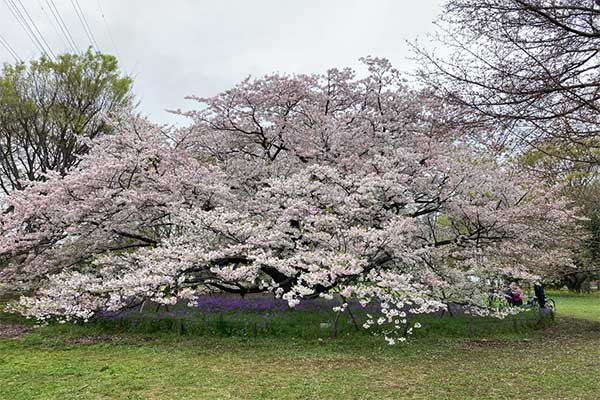
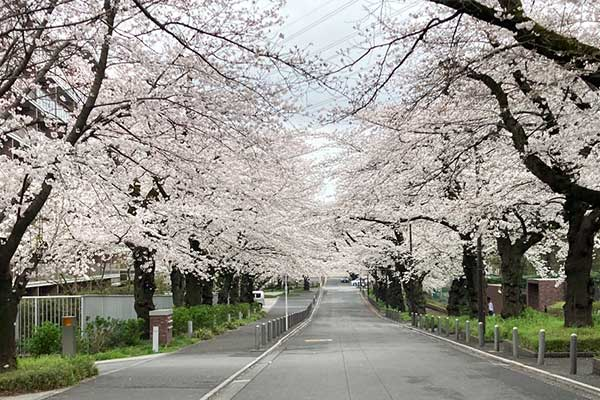
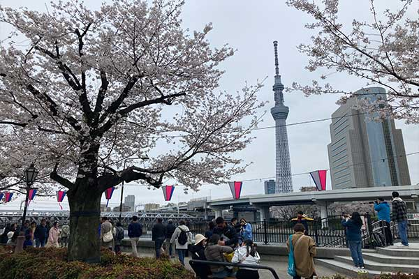
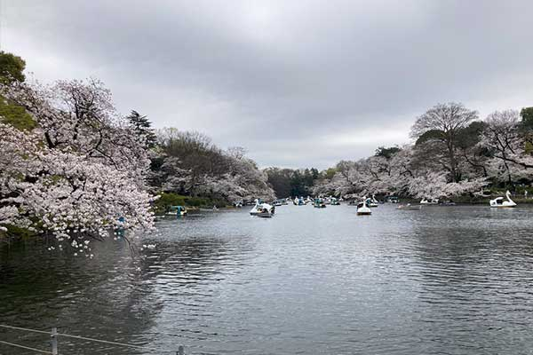
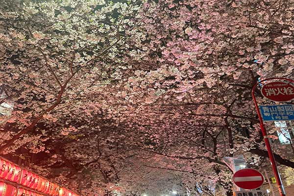
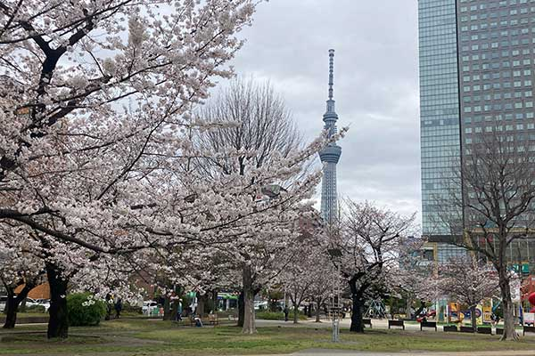

小金井公園のおすすめポイント
小金井公園は武蔵野市、小金井市、西東京市からなる
広大な敷地に見どころがたくさんある都内のオアシスです。

武蔵野桜堤
武蔵野桜堤は小金井公園のすぐ近くにある川沿いに沿った・・・・・。

目黒川沿いの桜
人気のスポットで川沿いに咲く桜は見ごたえあり、特に夜桜は格別です。
4月5日に訪ねたころは気温11℃と花冷えする寒さ

隅田川桜まつり
浅草側から見る桜並木は滝廉太郎の「花」の曲を彷彿とさせる歴史のある地域。
外国人旅行者も多くスカイツリーの眺めは圧倒的でした。

井之頭恩賜公園の桜
人気のスポットで池を中心に咲き誇る桜並木は見る者の心を和ませる。

その他のおすすめ桜スポット
渋谷・桜坂
